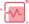

<ion-tabs>
    <ion-tab-bar slot="bottom" (ionTabBarChanged)="change($event)">
        <ion-tab-button tab="home">
            
            
            <ion-label>首页</ion-label>
        </ion-tab-button>

        <ion-tab-button tab="health">
            
            
            <ion-label>健康</ion-label>
        </ion-tab-button>

        <ion-tab-button tab="profile">
            
            
            <ion-label>我的</ion-label>
        </ion-tab-button>
    </ion-tab-bar>
</ion-tabs>
